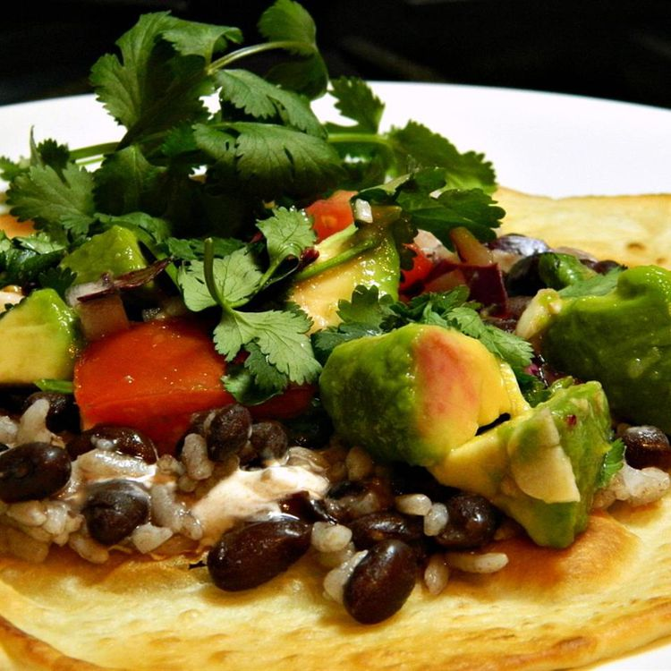

taco recipe
home page

California Tacos
These tacos are full of fresh vegetables
and lime. They're quick and
easy to make and they manage to be both healthy and very budget-friendly!
Ingredients
- 3 tomatoes, seeded and chopped
- 2 avocados, chopped
- 1 small onion, chopped
- ¼ cup chopped fresh cilantro
- 2 cloves garlic, minced
- 1 lime, juiced
- 2 tablespoons vegetable oil
- 8 corn tortillas
- 1 (15 ounce) can black beans, drained and rinsed
- 1 cup cooked white rice
- 2 tablespoons chopped fresh cilantro /li>
-
1 dash green pepper sauce (such as Tabasco®), or to taste (Optional)
-
Mix tomatoes, avocados, onion,
1/4 cup cilantro, and garlic
together in a bowl. Drizzle
lime juice over tomato mixture; toss
to coat.
-
Heat vegetable oil in a skillet over medium heat. Arrange tortillas, 2
at a time, in hot oil; cook until crisp, about 1 minute per side. Remove
tortillas using tongs and repeat with remaining tortillas.
-
Spoon 2 tablespoons black beans and 2 tablespoons cooked rice onto each
crisp tortilla; top with tomato mixture. Garnish tacos using remaining 2
tablespoons cilantro and green pepper sauce.